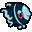
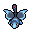
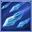
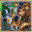
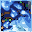
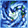
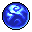
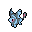

Pokédex / #457

Lumineon #457
Water
It crawls along the seafloor using its long front fins like legs. It competes for food with LANTURN.
Generation 4 · Sinnoh

Stats
| Attack | 69 | |
|---|---|---|
| Defense | 76 | |
| Sp. Atk | 69 | |
| Sp. Def | 86 |
In the wild
| Wild level | 40–50 |
|---|---|
| HP | 69 |
| Experience | 10 |
| Egg groups | Water 2 |
Evolution
- Evolves from Finneon at level 35.
Moves
| Level | Move | Type | Category | Power | Energy | Cooldown | Effect | |
|---|---|---|---|---|---|---|---|---|
| 1 | Pound | Normal | Physical | 40 | 40 | 6s | Pound inflicts damage and has no secondary effect. | |
| 5 |  | Rain Dance | Water | Status | – | 100 | 60s | Raind Dance raises the user's Attack and Defense by one stage. |
| 10 | Whirlpool | Water | Special | 35 | 100 | 20s | The user traps the target in a violent swirling whirlpool for four to five turns. | |
| 15 | Water Gun | Water | Special | 40 | 45 | 9s | Water Gun inflicts damage and has no secondary effect. | |
| 20 | Gust | Flying | Special | 40 | 40 | 9s | Gust deals damage and has no secondary effect. | |
| 25 | Water Pulse | Water | Special | 60 | 65 | 9s | Water Pulse deals damage and has a 20% chance of confusing the target. | |
| 30 |  | U-turn | Bug | Physical | 70 | 70 | 16s | U-turn does damage and has no secondary effect. |
| 40 |  | Waterfall | Water | Physical | 80 | 90 | 15s | Waterfall does damage and has a 20% chance of causing the target to flinch. |
| 45 |  | Dive | Water | Physical | 80 | 100 | 20s | Dive does damage and has no secondary effect. |
| 50 | Bounce | Flying | Physical | 85 | 95 | 18s | Bounce deals damage and has no secondary effect. | |
| 55 | Aqua Ring | Water | Status | – | 100 | 120s | The user surrounds itself with a veil of water, allowing it to restore 1/16 of its max HP at the end of every turn during 16 turns. | |
| 60 | Surf | Water | Special | 90 | 100 | 21s | Surf inflicts damage and has no secondary effect. | |
| 65 | Aqua Tail | Water | Physical | 90 | 90 | 14s | Aqua Tail deals damage and has no secondary effect. | |
| 70 | Hydro Pump | Water | Special | 110 | 120 | 27s | Hydro Pump inflicts damage and has no secondary effect. |
Field abilities
Flash
Special abilities
Swift Swim
Egg moves
AgilityAqua TailAurora BeamBrineCharmConfuse RayFlailPsybeamSignal BeamSplashSweet KissTickle
Technical machines
BlizzardDouble TeamFacadeHailHidden PowerHyper BeamIce BeamProtectRain DanceRestSafeguardSecret PowerSubstituteToxicWater Pulse
Drops
| Item | Amount | Chance | |
|---|---|---|---|
| razor fang | 1 | 100% | |
| water gem | 1–10 | 100% | |
| pot of water | 1 | 28% | |
 | blue sphere | 1 | 23.3% |
| cutting fang | 1 | 14% | |
| onigiri | 1–5 | 5% | |
 | lumineon doll | 1 | 0.1% |
| Splash Plate | 1 | 0.05% | |
| held mystic water | 1 | 0.02% |